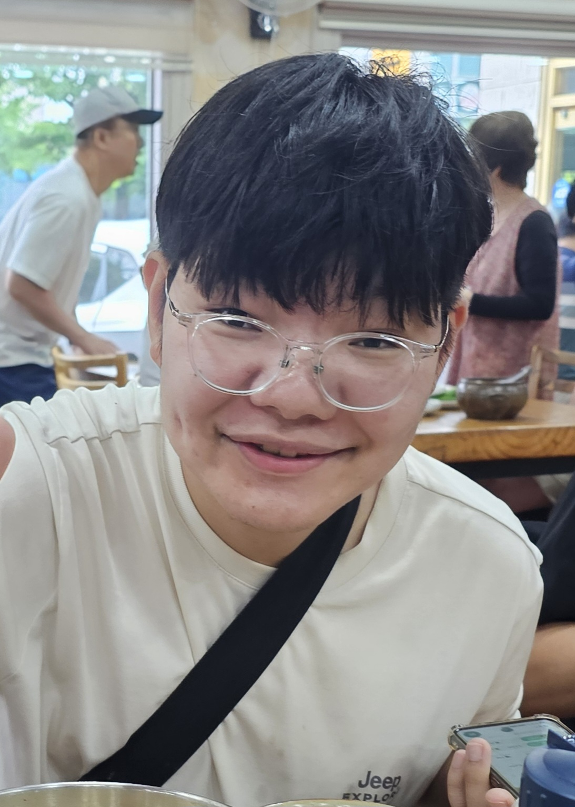

두산위브더제니스
대도중학교(졸업)
포항장성고등학교(졸업)
대구가톨릭대학교(미래자동차공학과/재학)
"천개구리"라는 하나의 생명체를 위한 위키
| 천예준 | |
|
 |
|
| 본명 | 천예준(Chun Ye-jun) |
| 출생 | 2007년 8월 7일(19세) |
| 서울특별시 강남구 청담동(본인 주장) | |
| 거주지 | 경상북도 포항시 북구 장성동 두산위브더제니스 |
| 국적 |
|
| 학력 | 장량초등학교(졸업) 대도중학교(졸업) 포항장성고등학교(졸업) 대구가톨릭대학교(미래자동차공학과/재학) |
| 링크 | 4 |